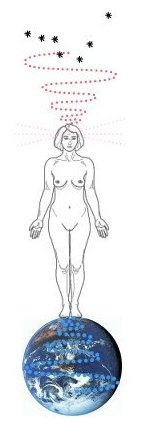

Practice
Yin & Yang
Yin and Yang lie at the core of all Traditional Chinese explanations of life on earth. ( yang= solid line, yin=broken line ) Everything in the Spiritual realm is a unity. Everything on the physical plane is a duality.
Yin and Yang are the two primary forces, they are opposites that compliment. Yang is the male principle or +'ve charge and Yin is the female principle or -'ve charge. It is the proportion, quality and interaction of these two forces that give rise to the many varied physical manifestations. Yin and Yang in perfect harmony is called 'Tai Qi' (symbolized here). The proportion of yin and yang in perfect harmony is 1: 1.61803.
Heavenly energies (planetary & cosmic)
Cosmic Particle (star) dust

Earthly energies (gravity & nuclear)
Everything is connected, the planets, the elements and all the living things. Our environment can be thought of as a reflection of ourselves and vice versa.
The 5 Elements